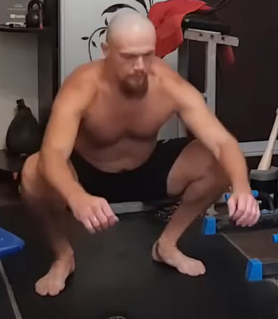
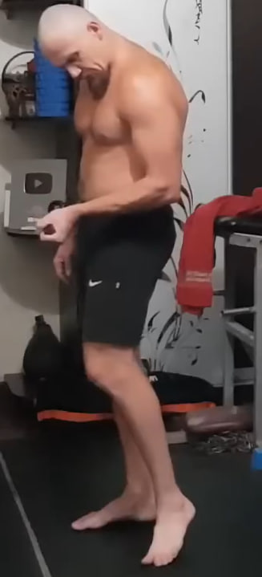
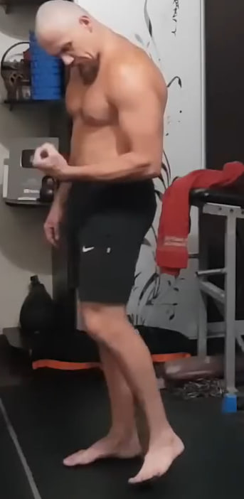
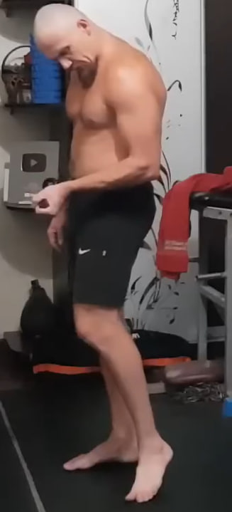
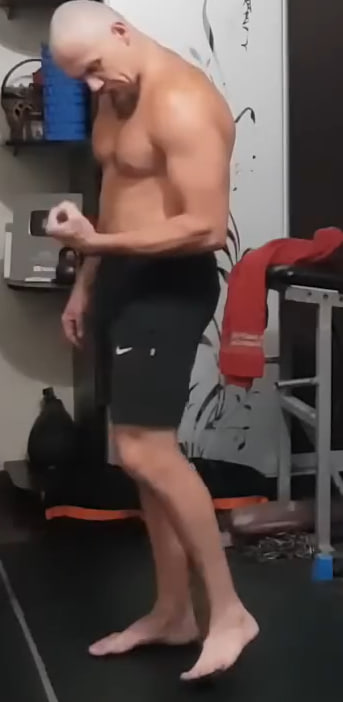

1. Flexiones profundas y lentas

Realiza 10 flexiones con las manos elevadas sobre dos kettlebells o pilas de libros. Baja en 4 segundos y sube en 1 segundo. Si es muy difícil, haz flexiones normales o con las rodillas apoyadas, manteniendo el cuerpo en línea recta.
2. Elevación parcial del abdomen


Acostado boca arriba con rodillas flexionadas, eleva el torso sin incorporarte por completo, solo lo necesario para tocar las rodillas con las manos. Haz 10 repeticiones con movimiento controlado, exhalando al subir e inhalando al bajar.
3. Sentadillas profundas con codos a las rodillas
Coloca los pies al ancho de hombros con el peso en los talones. Baja a una sentadilla profunda, llevando los codos hacia las rodillas para mantener la postura. Realiza 10 repeticiones, manteniendo el pecho abierto y la espalda recta.
4. Saltos en posición de plancha


Desde la posición de plancha, salta llevando los pies hacia adelante y luego vuelve a la plancha con otro salto. Mantén el abdomen firme y la cadera estable. Haz 10 repeticiones rápidas pero controladas.
5. Burpee sin flexión


Desde la plancha, salta con los pies hacia adelante y luego realiza un salto vertical con los brazos abajo. No hay flexión de brazos. Completa 10 repeticiones manteniendo un ritmo fluido y el cuerpo compacto.
6. Saltos estrella desde sentadilla


Comienza en sentadilla completa con las manos cerca del suelo. Desde ahí, explota hacia arriba abriendo brazos y piernas en forma de estrella. Aterriza suave, vuelve a la sentadilla y repite 10 veces sin pausas.
7. Subidas al banco

Apoya un pie en un banco o taburete y empuja con esa pierna para subir el cuerpo, elevando la otra rodilla. Baja con control y cambia de pierna. Realiza 10 repeticiones por pierna manteniendo el torso recto.
8. Estiramiento con toalla detrás de la cabeza


Toma una toalla o cinturón detrás de la cabeza, con un brazo arriba y otro abajo. Tira en direcciones opuestas creando tensión debajo del omóplato. Mantén la tensión 10 segundos y descansa 5 segundos. Repite 10 veces alternando la posición de los brazos.
9. Fondos en banco para tríceps con pausa


Con las manos en el borde de un banco y las piernas extendidas al frente, baja flexionando los codos y luego sube sin bloquearlos por completo. En la parte alta mantén la tensión durante 10 segundos, con los codos ligeramente doblados. Repite 10 veces controlando hombros y pecho.
10. Flexiones profundas repetidas

Repite el mismo ejercicio de flexiones profundas del inicio: manos elevadas, 4 segundos para bajar y 1 segundo para subir. Realiza otras 10 repeticiones manteniendo el cuerpo alineado y el abdomen activo.
11. Bombeo de antebrazo con agarre
 



Aprieta un calcetín o tela en el puño y mueve la muñeca arriba y abajo sin soltar el agarre. Haz 10 repeticiones por mano con un movimiento corto y continuo para llenar de sangre el antebrazo antes del trabajo de bíceps.
12. Flexión isométrica de bíceps

Coloca una mano sobre la otra como si la mano inferior fuera una pesa. La mano de trabajo tira hacia arriba mientras la otra ofrece resistencia hacia abajo. Flexiona el brazo como en un curl de bíceps con tensión constante. Alterna brazos en cada repetición hasta completar 10 por lado.